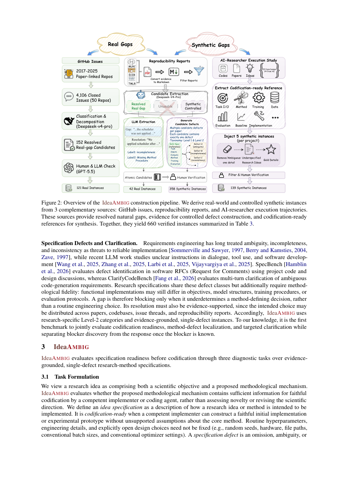

#1
★ 8/10
IdeaAMBIG: Benchmarking Implementation-Critical Gaps in Research-Idea Specifications
IdeaAMBIG: Benchmarking Implementation-Critical Gaps in Research-Idea Specifications

图 Figure · Page 3 of paper
🎯 （AI 中文深度分析暂不可用：Anthropic API 额度不足。英文栏为论文原文摘要，下方链接均可正常访问。）
A research idea may be novel, coherent, and scientifically plausible, yet its proposed method may remain insufficiently specified for faithful implementation
| 维度 | 中文 | English |
|---|---|---|
| ❓ 待解决 的问题 |
（AI 中文深度分析暂不可用：Anthropic API 额度不足。英文栏为论文原文摘要，下方链接均可正常访问。） | A research idea may be novel, coherent, and scientifically plausible, yet its proposed method may remain insufficiently specified for faithful implementation. We study the codification readiness of implementation-facing research-method specifications, defined by whether they provide sufficient methodological information for a competent implementer or coding agent to construct the intended method without unsupported assumptions. We construct evidence-grounded specifications and their supported resolutions from papers, codebases, issue threads, and reproduction artifacts. We introduce IdeaAMBIG, a benchmark of 660 evidence-grounded instances: 163 real-world gaps from reproducibility reports and GitHub issues, and 497 controlled synthetic gaps injected into codification-ready references. IdeaAMBIG evaluates three capabilities: codification-readiness assessment, defect localization, and clarification action generation. Defect localization receives only the specification, whereas clarification additionally receives the annotated defect. Across 13 LLMs, the best model achieves 9.6% Macro Defect Recovery Rate on real-world instances but 80.6% Macro Clarification Action Success Rate when given the defect. In an oracle study, supplying the gold resolution raises the downstream codification-ready rate from 14% to 98%. Across all evaluated models, defect localization is the main bottleneck, with stronger clarification given the defect. |
| 💡 解决 的亮点 |
（AI 中文深度分析暂不可用：Anthropic API 额度不足。英文栏为论文原文摘要，下方链接均可正常访问。） | See the paper’s original abstract in the "Problem / 背景" row above. |
| 🧪 实验 内容 |
（AI 中文深度分析暂不可用：Anthropic API 额度不足。英文栏为论文原文摘要，下方链接均可正常访问。） | See the paper’s original abstract in the "Problem / 背景" row above. |
| 📊 实验 结果 |
（AI 中文深度分析暂不可用：Anthropic API 额度不足。英文栏为论文原文摘要，下方链接均可正常访问。） | See the paper’s original abstract in the "Problem / 背景" row above. |
| 🏁 结论 | （AI 中文深度分析暂不可用：Anthropic API 额度不足。英文栏为论文原文摘要，下方链接均可正常访问。） | See the paper’s original abstract in the "Problem / 背景" row above. |
| 🔗 论文 链接 |
arXiv: 2609.10539v1 · 📥 PDF | |
⚙️ Method · 方法详解
（AI 中文深度分析暂不可用：Anthropic API 额度不足。英文栏为论文原文摘要，下方链接均可正常访问。）
See the paper’s original abstract in the "Problem / 背景" row above.
🌟 Why It Matters · 为什么重要
（AI 中文深度分析暂不可用：Anthropic API 额度不足。英文栏为论文原文摘要，下方链接均可正常访问。）
See the paper’s original abstract in the "Problem / 背景" row above.